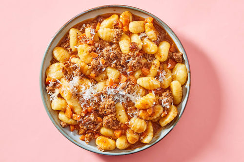

Bolognese Gnocchi

This quick one pot gnocchi or should I say gnocchi
Bolognese would knock your socks off. Soft,
pillowy gnocchi loaded with tomato sauce, melt
in the mouth ground beef, and other fresh
ingredients. It is simple, easy, and comes
together in about 30 minutes.